Day 20｜準備 PostgreSQL HA 的三個資料庫節點：PostgreSQL 18、資料磁碟、TLS 與 SCRAM-SHA-256
對應文章：Day 20｜準備 PostgreSQL HA 的三個資料庫節點：PostgreSQL 18、資料磁碟、TLS 與 SCRAM-SHA-256
本日建立 pg01～pg03，逐台完成 Data Disk、PGDG Repository、PostgreSQL 18、名稱解析與 TLS，形成三台可獨立驗收的資料庫節點。
本日操作原則
- 每一節都會標示操作位置。
- 寫「三台逐台執行」時，先完整做完 pg01，再做 pg02、pg03。
- 不要把三段磁碟格式化指令同時貼到三個 Console。
- 指令中的
/dev/sdb只有在lsblk驗證它是 16 GiB 空白 Data Disk 後才能使用。 - Private Key 必須在目前 PG Node 本機產生，不經 ca01 或 jump01 複製。
1. 建立 pg01
操作位置：PVE Web UI。
- 左側選 Day 06 的 Debian 13 Template。
- 右上角按
More→Clone。 Target Node選pve01。VM ID填221。Name填pg01。Mode選Full Clone。Target Storage選 pve01 的local-lvm。- 按
Clone，等待 Task 顯示OK。 - 選 VM 221 →
Hardware→Processors→Edit。 - Sockets 填
1、Cores 填2，CPU Type 使用目前已驗證可 Migration 的相容模式，按OK。 - 選
Memory→Edit，Memory 填2048 MiB，取消 Ballooning，按OK。 - 選 System Disk →
Disk Action→Resize。 - 讓 System Disk 最終至少為 24 GiB；Resize 欄位填的是增加量，不是最終容量。
- 選
Network Device (net0)→Edit。 - Bridge 選
vmbr1、VLAN Tag 填30、Model 選VirtIO、Firewall 勾選，按OK。 - 選
Cloud-Init。 - User 使用
labadmin，Password 使用本次 Lab 管理密碼。 IP Config (net0)→Edit，IPv4 選Static。- IPv4/CIDR 填
10.77.30.11/24，Gateway 填10.77.30.1，按OK。 - DNS Domain 填
lab.home，DNS Server 填10.77.30.1。 - 按
Regenerate Image。 - 到
Hardware→Add→Hard Disk。 - Bus／Device 選
SCSI，Storage 選 pve01 的local-lvm，Disk size 填16 GiB。 - 勾選
Discard與IO thread，按Add。 - 到
Options→Start at boot→Edit，勾選後按OK。 - 按
Start，開啟Console。
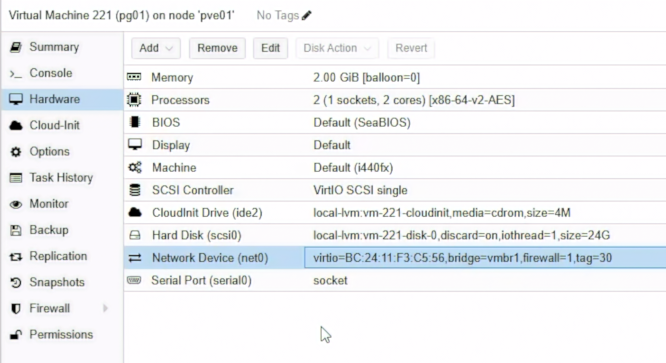
圖（一）pg01 使用 2 vCPU、2 GiB 記憶體與 24 GiB 系統磁碟，網卡連接 vmbr1 並標記 VLAN 30。
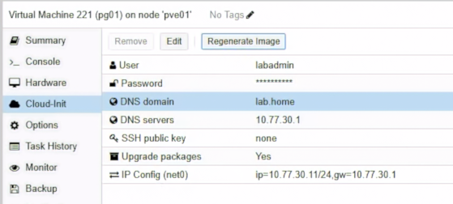
圖（二）Cloud-Init 設定 labadmin、lab.home、DNS 10.77.30.1 與靜態 IP 10.77.30.11/24。
2. 建立 pg02 與 pg03
操作位置：PVE Web UI。
按照第 1 節完整重複兩次，只替換以下值：
- pg02：Target Node
pve02、VMID222、Namepg02、IP10.77.30.12/24。 - pg03：Target Node
pve03、VMID223、Namepg03、IP10.77.30.13/24。
每台都必須有：
- 2 vCPU、2048 MiB RAM。
- 至少 24 GiB System Disk。
- 16 GiB SCSI Data Disk。
vmbr1、VLAN Tag 30、VirtIO、Firewall Enabled。- Gateway／DNS
10.77.30.1。 - System Disk 與 16 GiB Data Disk 都使用目前節點的
local-lvm。
三台開機後各自在 Console 執行：
hostnamectl --static
ip -br address
ip route
lsblk
curl -4I --connect-timeout 10 https://apt.postgresql.org/
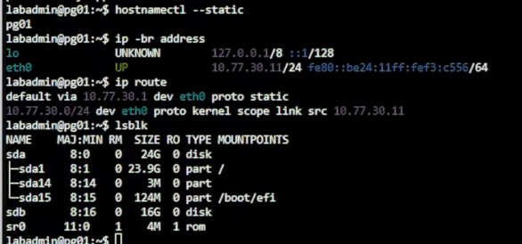
圖（三）pg01 已套用主機名稱、10.77.30.11/24、預設閘道與 24 GiB 系統磁碟，16 GiB 資料磁碟此時尚未建立檔案系統。
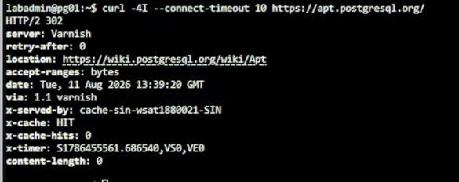
圖（四）apt.postgresql.org 回傳 HTTP 302 重新導向，確認 pg01 可以連到 PostgreSQL Apt 軟體庫入口。
如果 Hostname 仍是 Template 名稱，分別執行：
sudo hostnamectl set-hostname pg01
pg02、pg03 改成自己的名稱，重新登入 Console 後再確認。
3. 三台先完成時間同步
操作位置：pg01、pg02、pg03 Console。三台都要完成，不能只在 pg01 執行。
PostgreSQL 的 Log、TLS Certificate 有效期，以及後續 etcd 的 Raft Election 和 Patroni Leader Lock 都需要一致的時間。三台 PG VM 建立後，先把 Chrony 當作共同基線完成。
先在 pg01 執行：
sudo timedatectl set-timezone Asia/Taipei
sudo apt update
sudo apt install -y chrony
echo 'server 10.77.30.1 iburst prefer' | \
sudo tee /etc/chrony/sources.d/opnsense.sources
sudo systemctl enable --now chrony
sudo systemctl restart chrony
sudo chronyc makestep
chronyc waitsync 30 0.1
systemctl is-enabled chrony
systemctl is-active chrony
chronyc tracking
chronyc sources -n -v
timedatectl
完成後，在 pg02、pg03 逐台執行完全相同的指令。
10.77.30.1 是 Database VLAN 上的 OPNsense Gateway。三台使用相同的內部時間來源，不依賴各自能否直接連到公用 NTP。新增 opnsense.sources 不需要刪除套件原有的來源；prefer 只表示可用時優先選擇 OPNsense。
檢查結果必須符合：
systemctl is-enabled chrony顯示enabled。systemctl is-active chrony顯示active。chronyc tracking的Leap status顯示Normal。chronyc sources -n -v中，10.77.30.1所在列以^*開頭，確認目前選用 OPNsense 同步。timedatectl顯示Time zone: Asia/Taipei與System clock synchronized: yes。
chronyc waitsync 30 0.1 最多檢查 30 次，等待系統時間誤差降到 0.1 秒內；成功時可能不會顯示額外訊息。若 10.77.30.1 一直未成為 ^*，先檢查 LAB_INTERNAL to firewall NTP 規則，以及 OPNsense 是否對 Database VLAN 提供 NTP，確認同步後再繼續建立服務。
pg01、pg02、pg03 都要實際完成安裝與同步，並逐台以 chronyc tracking 與 chronyc sources -n -v 驗證結果。
4. 初始化 pg01 Data Disk
操作位置：pg01 Console。
先執行：
sudo lsblk -o NAME,SIZE,TYPE,FSTYPE,MOUNTPOINTS,MODEL
sudo wipefs -n /dev/sdb
只有同時符合以下條件才能繼續：
/dev/sdb容量為 16 GiB。- Type 為
disk。 - FSTYPE 與 MOUNTPOINTS 都是空白。
wipefs -n沒有顯示既有 Filesystem Signature。
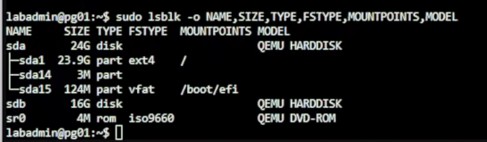
圖（五）格式化前確認 /dev/sdb 為 16 GiB 磁碟，FSTYPE 與掛載位置皆為空白。
確認後執行：
sudo mkfs.ext4 -L pgdata /dev/sdb
sudo mkdir -p /var/lib/postgresql
grep -q '^LABEL=pgdata /var/lib/postgresql ' /etc/fstab || \
echo 'LABEL=pgdata /var/lib/postgresql ext4 defaults,noatime 0 2' | \
sudo tee -a /etc/fstab
sudo systemctl daemon-reload
sudo findmnt --verify --verbose
sudo mount -a
findmnt /var/lib/postgresql
df -hT /var/lib/postgresql
findmnt 必須顯示 /dev/sdb 掛載到 /var/lib/postgresql，Filesystem 為 ext4。
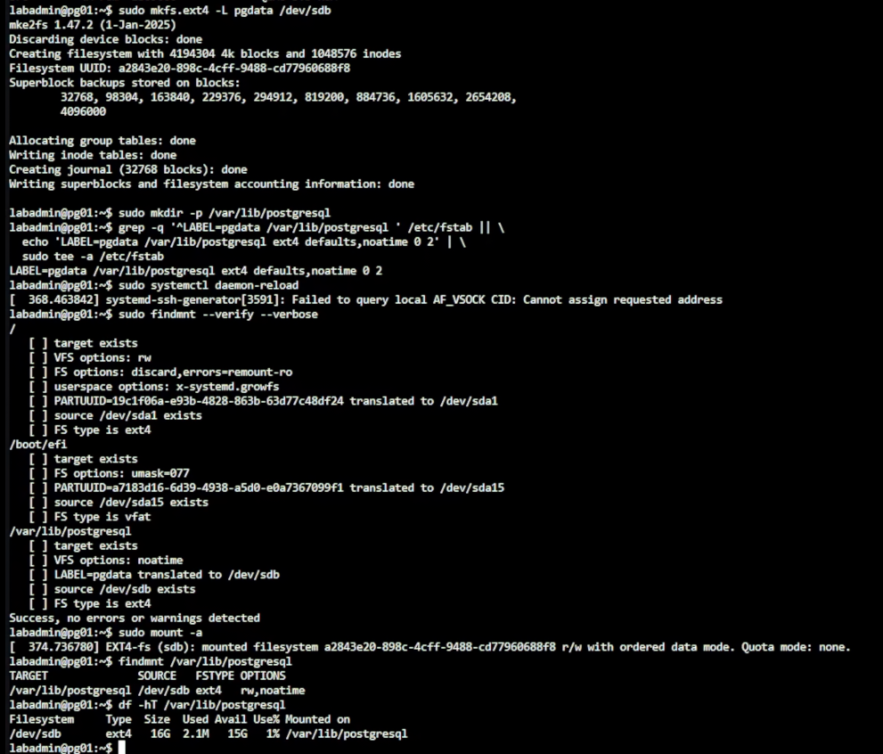
圖（六）/dev/sdb 完成 ext4 格式化、寫入 /etc/fstab 並掛載至 /var/lib/postgresql。畫面中的 AF_VSOCK 提示與磁碟掛載分開判讀；findmnt --verify 顯示檢查成功，最後的 findmnt 與 df 也確認掛載結果。
5. 初始化 pg02、pg03 Data Disk
操作位置：先 pg02 Console，再 pg03 Console。
- 在 pg02 重複第 4 節全部指令。
- 完成
findmnt與df -hT驗證後才離開 pg02。 - 在 pg03 重複第 4 節全部指令。
- 三台都再次執行：
findmnt /var/lib/postgresql
grep '^LABEL=pgdata /var/lib/postgresql ' /etc/fstab
每台 /etc/fstab 只能有一行 LABEL=pgdata。若先前誤貼多次，先用 sudo nano /etc/fstab 保留一行，再執行 sudo systemctl daemon-reload 與 sudo mount -a。
6. 加入 PGDG Repository 並安裝 PostgreSQL 18
操作位置：pg01、pg02、pg03 逐台執行。
先在 pg01 執行完整流程：
sudo apt update
sudo apt install -y postgresql-common ca-certificates curl
sudo /usr/share/postgresql-common/pgdg/apt.postgresql.org.sh
sudo apt update
apt-cache policy postgresql-18
Repository Script 顯示確認畫面時按 Enter。apt-cache policy 出現 Candidate 後才安裝：
sudo chown postgres:postgres /var/lib/postgresql
sudo chmod 0750 /var/lib/postgresql
sudo apt install -y postgresql-18 postgresql-client-18 postgresql-contrib-18
psql --version
sudo pg_lsclusters
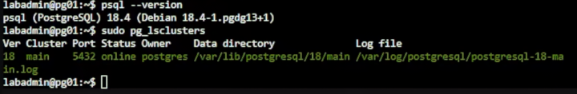
圖（七）pg01 已安裝 PostgreSQL 18.4，pg_lsclusters 顯示 18/main 位於資料磁碟下並處於 online。
完成 pg01 後，在 pg02、pg03 重複相同流程。安裝 postgresql-common 不會自動執行 PGDG Script；三台都要明確執行一次。
7. 固定名稱解析
操作位置：ca01、pg01、pg02、pg03。
這四台都是由 Cloud Image 建立。只修改 /etc/hosts，重新開機後可能會被 Cloud-Init 覆蓋，因此四台都要同步修改 Debian hosts Template。
先在每台備份並開啟 Template：
sudo cp -a /etc/cloud/templates/hosts.debian.tmpl \
/etc/cloud/templates/hosts.debian.tmpl.before-day21
sudo nano /etc/cloud/templates/hosts.debian.tmpl
刪除 Template 中把 {{fqdn}} 與 {{hostname}} 指向 127.0.1.1 的那一行。ca01 已在 Day 19 改為 10.77.30.10 {{fqdn}} {{hostname}}，這一行也一起換成下面的完整靜態名稱清單。保留原有的 127.0.0.1 localhost 與 IPv6 內容：
10.77.30.10 ca01.lab.home ca01
10.77.30.11 pg01.lab.home pg01
10.77.30.12 pg02.lab.home pg02
10.77.30.13 pg03.lab.home pg03
10.77.20.21 proxy01.lab.home proxy01
10.77.20.22 proxy02.lab.home proxy02
10.77.20.11 db-rw.lab.home db-rw
10.77.20.12 db-ro.lab.home db-ro
10.77.40.11 backup01.lab.home backup01
按 Ctrl+O、Enter、Ctrl+X。接著同步修改目前正在使用的 /etc/hosts：
sudo nano /etc/hosts
刪除把本機 FQDN 指向 127.0.1.1 的項目，保留 127.0.0.1 localhost 與 IPv6 內容，再加入相同的靜態名稱清單：
10.77.30.10 ca01.lab.home ca01
10.77.30.11 pg01.lab.home pg01
10.77.30.12 pg02.lab.home pg02
10.77.30.13 pg03.lab.home pg03
10.77.20.21 proxy01.lab.home proxy01
10.77.20.22 proxy02.lab.home proxy02
10.77.20.11 db-rw.lab.home db-rw
10.77.20.12 db-ro.lab.home db-ro
10.77.40.11 backup01.lab.home backup01
按 Ctrl+O、Enter、Ctrl+X。四台都逐一驗證完整 FQDN：
for host in ca01.lab.home pg01.lab.home pg02.lab.home pg03.lab.home; do
getent ahostsv4 "$host" | head -n 1
done
結果必須依序使用 10.77.30.10～10.77.30.13，不能出現 127.0.1.1。pg01、pg02、pg03 可以逐台重新開機並重複上述檢查，確認 Cloud-Init 依照修改後的 Template 重建 /etc/hosts；一次只重新開機一台。ca01 已在 Day 19 完成相同的重新開機驗證。
8. 從三台 PG 測試 ca01 Firewall
操作位置：pg01、pg02、pg03。
每台執行：
curl -sk --connect-timeout 5 \
https://ca01.lab.home:9000/health
這裡的 -k 只用來確認三台 PG 節點能經由 TCP 9000 通過 ca01 nftables Host Firewall；完成 Bootstrap 後，正式連線改用已驗證的信任鏈。
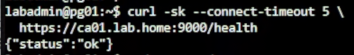
圖（八）pg01 存取 ca01 健康檢查端點並取得 {"status":"ok"}，確認 TCP 9000 路徑可用。
9. 在三台安裝 step CLI
操作位置：pg01、pg02、pg03 逐台執行。
sudo apt update
sudo apt install -y curl gpg ca-certificates
sudo install -d -m 0755 /etc/apt/keyrings
sudo curl -fsSL https://packages.smallstep.com/keys/apt/repo-signing-key.gpg \
-o /etc/apt/keyrings/smallstep.asc
sudo nano /etc/apt/sources.list.d/smallstep.sources
填入：
Types: deb
URIs: https://packages.smallstep.com/stable/debian
Suites: debs
Components: main
Signed-By: /etc/apt/keyrings/smallstep.asc
按 Ctrl+O、Enter、Ctrl+X，再執行：
sudo apt update
sudo apt install -y step-cli
step version
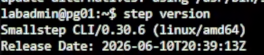
圖（九）pg01 已可執行 step CLI，畫面中的版本為 0.30.6。
10. Bootstrap ca01 Root Trust
操作位置：先 ca01，再 pg01、pg02、pg03。
在 ca01 Console 顯示 Fingerprint：
sudo -u step-ca step certificate fingerprint \
/var/lib/step-ca/certs/root_ca.crt
透過受控方式把 Fingerprint 記錄下來。回到 pg01，將值貼入：
CA_FINGERPRINT='貼上-ca01-輸出的-SHA256-Fingerprint'
sudo step ca bootstrap \
--ca-url https://ca01.lab.home:9000 \
--fingerprint "$CA_FINGERPRINT"
sudo install -d -m 750 -o postgres -g postgres /etc/postgresql/tls
sudo install -m 644 -o postgres -g postgres \
/root/.step/certs/root_ca.crt /etc/postgresql/tls/ca.crt
在 pg02、pg03 重複相同指令。三台使用同一個 Root Fingerprint。
11. 在 pg01 本機申請 Server Certificate
操作位置：pg01 Console。
sudo step ca certificate pg01.lab.home \
/etc/postgresql/tls/server.crt \
/etc/postgresql/tls/server.key \
--ca-url https://ca01.lab.home:9000 \
--root /etc/postgresql/tls/ca.crt \
--provisioner iron-lab-admin \
--not-after=2160h \
--san pg01 \
--san pg01.lab.home \
--san db-rw.lab.home \
--san db-ro.lab.home \
--san 10.77.30.11
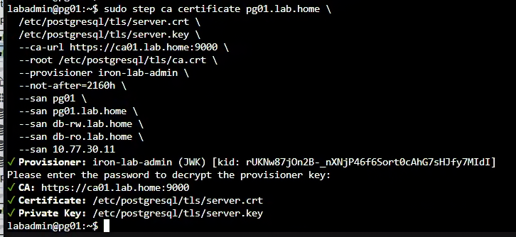
圖（十）pg01 使用 iron-lab-admin Provisioner 向 ca01 申請憑證，伺服器憑證與私鑰直接寫入本機 TLS 目錄。
提示輸入 Password 時，輸入 Day 19 建立的 iron-lab-admin Provisioner Password。不要輸入 CA Key Password。
設定權限並檢查：
sudo chown -R postgres:postgres /etc/postgresql/tls
sudo chmod 750 /etc/postgresql/tls
sudo chmod 644 /etc/postgresql/tls/ca.crt /etc/postgresql/tls/server.crt
sudo chmod 600 /etc/postgresql/tls/server.key
sudo -u postgres test -r /etc/postgresql/tls/server.key && echo 'server key readable'
sudo -u postgres grep -c '^-----BEGIN CERTIFICATE-----$' \
/etc/postgresql/tls/server.crt
sudo -u postgres openssl verify \
-show_chain \
-CAfile /etc/postgresql/tls/ca.crt \
-untrusted /etc/postgresql/tls/server.crt \
/etc/postgresql/tls/server.crt
sudo -u postgres openssl x509 -in /etc/postgresql/tls/server.crt \
-noout -subject -issuer -dates -ext subjectAltName
server.crt 內應有兩段 BEGIN CERTIFICATE，分別是 Server Leaf Certificate 與 Intermediate CA Certificate。ca.crt 保存受信任的 Root CA；OpenSSL 驗證時使用 -untrusted server.crt，讓它取用 Bundle 內的 Intermediate 並建立 Leaf → Intermediate → Root Chain。
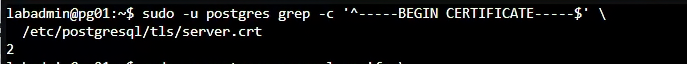
圖（十一）server.crt 共有兩段憑證，分別提供伺服器葉憑證與中繼 CA 憑證。
/etc/postgresql/tls 使用 750 postgres:postgres，因此 labadmin 即使看到 Certificate File 是 644，仍不能穿越上層目錄讀取檔案。不要把目錄放寬成 755；Certificate 與 Private Key 的檢查都使用 sudo -u postgres 執行。驗證成功時必須顯示 server.crt: OK，並列出深度 0～2 的完整 Chain。
12. 在 pg02、pg03 本機申請 Server Certificate
操作位置：pg02 Console，再 pg03 Console。
pg02 使用：
sudo step ca certificate pg02.lab.home \
/etc/postgresql/tls/server.crt \
/etc/postgresql/tls/server.key \
--ca-url https://ca01.lab.home:9000 \
--root /etc/postgresql/tls/ca.crt \
--provisioner iron-lab-admin \
--not-after=2160h \
--san pg02 \
--san pg02.lab.home \
--san db-rw.lab.home \
--san db-ro.lab.home \
--san 10.77.30.12
pg03 使用：
sudo step ca certificate pg03.lab.home \
/etc/postgresql/tls/server.crt \
/etc/postgresql/tls/server.key \
--ca-url https://ca01.lab.home:9000 \
--root /etc/postgresql/tls/ca.crt \
--provisioner iron-lab-admin \
--not-after=2160h \
--san pg03 \
--san pg03.lab.home \
--san db-rw.lab.home \
--san db-ro.lab.home \
--san 10.77.30.13
因為上述簽發命令透過 sudo step 執行，新產生的 server.crt 與 server.key 可能屬於 root。完成 pg02 的簽發後立刻執行以下完整區塊；完成 pg03 的簽發後，再在 pg03 執行同一個區塊：
sudo chown -R postgres:postgres /etc/postgresql/tls
sudo chmod 750 /etc/postgresql/tls
sudo chmod 644 /etc/postgresql/tls/ca.crt /etc/postgresql/tls/server.crt
sudo chmod 600 /etc/postgresql/tls/server.key
sudo -u postgres test -r /etc/postgresql/tls/ca.crt && echo 'ca readable'
sudo -u postgres test -r /etc/postgresql/tls/server.crt && echo 'certificate readable'
sudo -u postgres test -r /etc/postgresql/tls/server.key && echo 'key readable'
sudo -u postgres grep -c '^-----BEGIN CERTIFICATE-----$' \
/etc/postgresql/tls/server.crt
sudo -u postgres openssl verify \
-show_chain \
-CAfile /etc/postgresql/tls/ca.crt \
-untrusted /etc/postgresql/tls/server.crt \
/etc/postgresql/tls/server.crt
sudo -u postgres openssl x509 -in /etc/postgresql/tls/server.crt \
-noout -subject -issuer -dates -ext subjectAltName
三個 Readable Check 都必須顯示結果，Certificate 數量應為 2，而 Chain 驗證必須顯示 server.crt: OK。若其中一個 echo 沒有出現，不要繼續 Restart PostgreSQL，先用 sudo stat -c '%U %G %a %n' /etc/postgresql/tls/* 核對 Owner、Group 與 Mode。
最後，三台 server.key 不應有相同 Hash：
sudo sha256sum /etc/postgresql/tls/server.key
只比較三台輸出的 Hash 是否不同，不把 Private Key 內容貼到任何地方。
13. 設定 PostgreSQL 18
操作位置：pg01、pg02、pg03。
先在 pg01 開啟：
sudo nano /etc/postgresql/18/main/postgresql.conf
找到或新增：
listen_addresses = 'localhost,10.77.30.11'
port = 5432
password_encryption = 'scram-sha-256'
ssl = on
ssl_cert_file = '/etc/postgresql/tls/server.crt'
ssl_key_file = '/etc/postgresql/tls/server.key'
ssl_ca_file = '/etc/postgresql/tls/ca.crt'
wal_level = replica
max_wal_senders = 10
max_replication_slots = 10
wal_log_hints = on
logging_collector = on
log_connections = 'receipt,authentication,authorization'
log_disconnections = on
log_line_prefix = '%m [%p] %q%u@%d '
PostgreSQL 18 的 log_connections 已是 String Parameter，不再只用 Boolean 表達。雖然 on 為了向下相容仍可使用，而且等同於 receipt,authentication,authorization，本文件直接列出三個實際啟用的 Connection Stage，避免讀者誤以為 setup_durations 也會一起記錄。若要連建立連線各階段的耗時都寫入 Log，再把 setup_durations 加入清單，或改用 all。
log_disconnections 目前仍是 Boolean，因此使用 on 沒有問題。這些連線記錄預設關閉，是因為每次連入、驗證與離線都可能產生 Log I/O、儲存量與敏感資訊暴露；PostgreSQL 使用保守的通用預設，讓管理者依工作負載、稽核需求與 Log 保存能力自行開啟。本 Lab 為了保留連線與切換證據才明確啟用。
按 Ctrl+O、Enter、Ctrl+X。
pg02 使用相同設定，但 listen_addresses 改為 localhost,10.77.30.12。pg03 改為 localhost,10.77.30.13。
14. 設定最小 pg_hba.conf
操作位置：pg01、pg02、pg03。
sudo cp -a /etc/postgresql/18/main/pg_hba.conf \
/etc/postgresql/18/main/pg_hba.conf.before-day21
sudo nano /etc/postgresql/18/main/pg_hba.conf
保留套件建立的 Local Administrative Login，並在檔案末端確認有最終 Reject：
host all all 0.0.0.0/0 reject
host all all ::/0 reject
目前的遠端規則以最終 reject 收尾；Application、VPN 與 Replication Network 會在具備實際角色及來源位址後，再加入精確的 hostssl 規則。
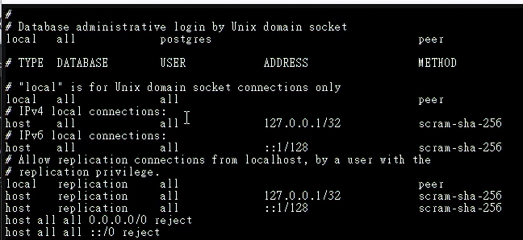
圖（十二）保留 Unix Socket 與 Loopback 管理規則，並以 IPv4、IPv6 的最終 reject 收斂其餘遠端連線。
15. Restart 並逐台驗證
操作位置：pg01、pg02、pg03。
每台執行：
sudo pg_ctlcluster 18 main restart
sudo pg_lsclusters
sudo -u postgres psql -Atqc 'SHOW data_directory;'
sudo -u postgres psql -Atqc 'SHOW ssl;'
sudo -u postgres psql -Atqc 'SHOW hba_file;'
sudo -u postgres psql -P pager=off -x \
-c 'SELECT line_number,type,database,user_name,address,auth_method,error FROM pg_hba_file_rules;'
sudo ss -lntp | grep ':5432'
findmnt /var/lib/postgresql
sudo journalctl -u postgresql -b -n 50 --no-pager
pg_hba_file_rules.error 必須全部為空。Data Directory 必須位於掛載的 Data Disk 之下。
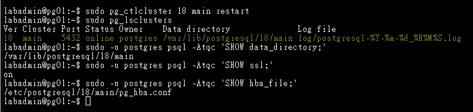
圖（十三）重新啟動後，18/main 維持 online，資料目錄位於 /var/lib/postgresql/18/main，TLS 已啟用並使用預期的 pg_hba.conf。
16. 建立本日管理 Role
操作位置：只在 pg01。
sudo -u postgres psql
在 psql 內執行：
CREATE DATABASE appdb;
CREATE ROLE dba_admin LOGIN;
\password dba_admin
GRANT CONNECT ON DATABASE appdb TO dba_admin;
\du dba_admin
\q
使用 \password 互動輸入，避免把密碼寫進 Shell History。本日以 dba_admin 完成管理角色基線。
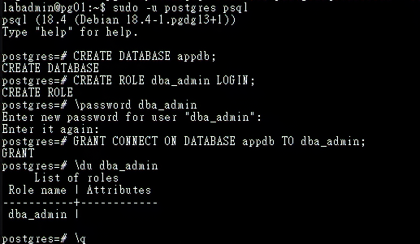
圖（十四）pg01 建立 appdb 與具備 LOGIN 的 dba_admin，並授予該角色資料庫 CONNECT 權限。
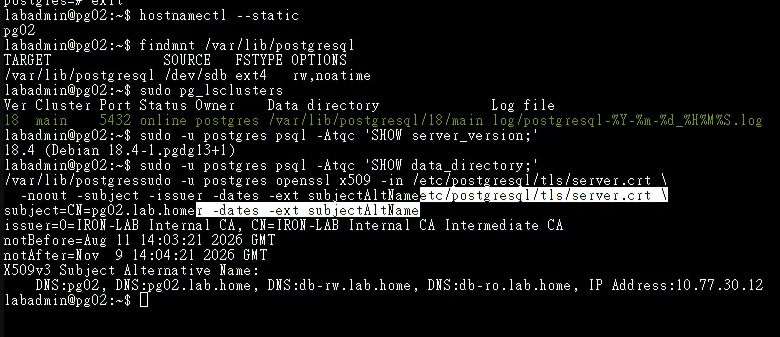
圖（十五）再抽查 pg02，資料磁碟掛載、18/main 狀態、資料目錄與憑證 SAN 均符合該節點的規劃值。